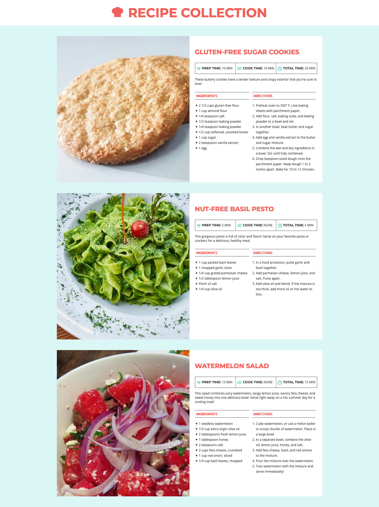
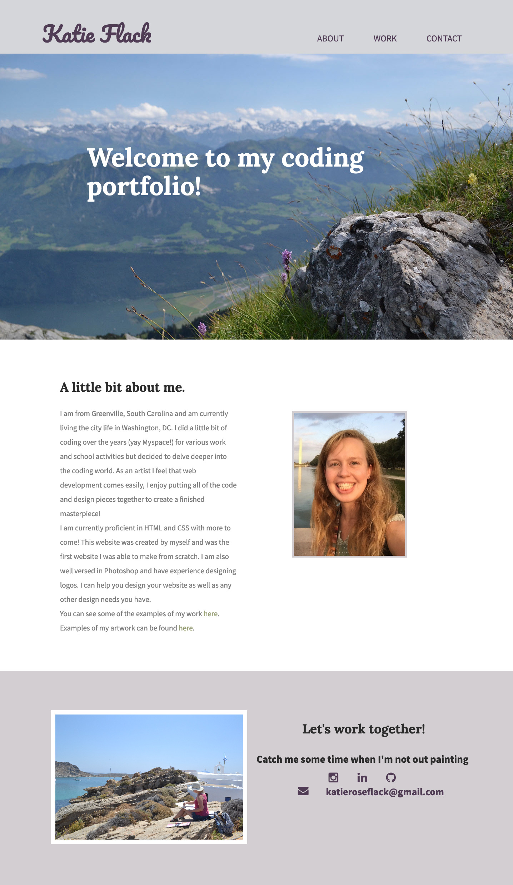

My Portfolio

Recipe Collection
HTML 5 & CSS Exercise
My skills were put to the test with a fun recipe layout and I was able to create this beautiful page for the recipes.
Vision Board
HTML 5 & CSS Exercise
Creating this vision board went directly along with my visions for this year and helped me learn even more about layouts in HTML 5.

My First Website
HTML 5 & CSS Website
This was my first website coded by yours truly. This was a cumulation of my skills after taking classes in HTML and CSS to make a clean and concise portfolio.